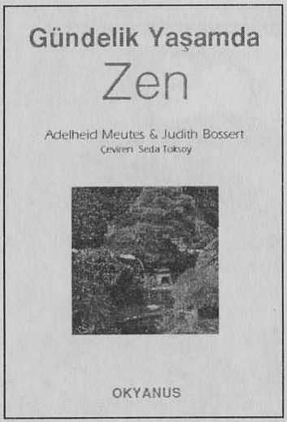

Günün birinde bir keşiş Zen Ustası Joshu'ya sormuş "Zen nedir? Lütfen öğret bana”. "Kahvaltı ettin mi?" diye sormuş Joshu "Evet, Usta” demiş keşiş.
"Öyleyse” demiş Joshu "git çanağını yıka". Zen özel bir şey değildir. Zen sizin dininizdir,benim dinimdir. Japonların dinidir.
Zen kızılderililerin, İslam’ın dinidir. Bir felsefedir. Bedenimizdir Zen. Bedenimizin duruşu, bedenimizin çalışmasıdır. Bilgisayarın tuşlarında gezinen parmaklarımızdır Zen. Bisiklete binerkenki ben'dir. Gülüşümüzdür Zen, ağlayışımız, nefretimiz, sevgimiz, yasımızdır. Zen davranışımız ve davranışımızın gözlemidir.
Aydır Zen, ağaçtır, güneşin batışıdır. İlkbahar, yaz, güz ve kıştır. Zen, çiçekleri vazoya yerleştiren kadındır. Usta’nın çay içişidir.
Zen'i öğrenmek istiyorsanız Asya'da uygulanan geleneksel yolları izlemek zorunda değilsiniz. Yürürken, yemek pişirirken, araba ve bilgisayar kullanırken, koşarken, dansederken, tenis ya da futbol oynarken de Zen’i uygulayabilirsiniz.
İşte bu kitap ta bunun için yazıldı.